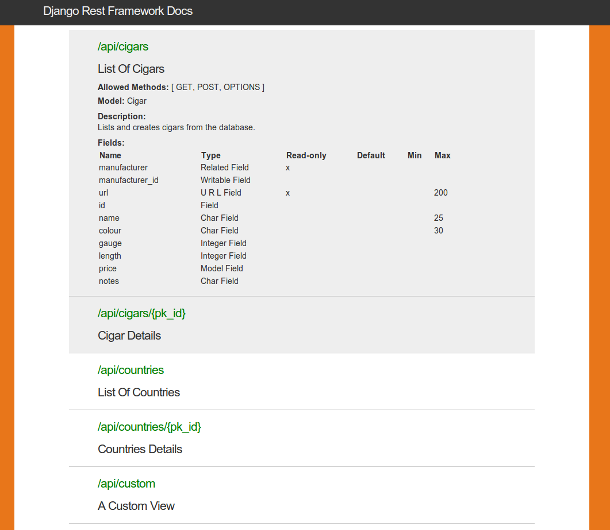

Documenting your API
A REST API should spend almost all of its descriptive effort in defining the media type(s) used for representing resources and driving application state.
— Roy Fielding, REST APIs must be hypertext driven
There are a variety of approaches to API documentation. This document introduces a few of the various tools and options you might choose from. The approaches should not be considered exclusive - you may want to provide more than one documentation style for you API, such as a self describing API that also includes static documentation of the various API endpoints.
Endpoint documentation
The most common way to document Web APIs today is to produce documentation that lists the API endpoints verbatim, and describes the allowable operations on each. There are various tools that allow you to do this in an automated or semi-automated way.
Django REST Swagger
Marc Gibbons' Django REST Swagger integrates REST framework with the Swagger API documentation tool. The package produces well presented API documentation, and includes interactive tools for testing API endpoints.
The package is fully documented, well supported, and comes highly recommended.
Django REST Swagger supports REST framework versions 2.3 and above.

REST Framework Docs
The REST Framework Docs package is an earlier project, also by Marc Gibbons, that offers clean, simple autogenerated documentation for your API.

Apiary
There are various other online tools and services for providing API documentation. One notable service is Apiary. With Apiary, you describe your API using a simple markdown-like syntax. The generated documentation includes API interaction, a mock server for testing & prototyping, and various other tools.

Self describing APIs
The browsable API that REST framework provides makes it possible for your API to be entirely self describing. The documentation for each API endpoint can be provided simply by visiting the URL in your browser.

Setting the title
The title that is used in the browsable API is generated from the view class name or function name. Any trailing View or ViewSet suffix is stripped, and the string is whitespace separated on uppercase/lowercase boundaries or underscores.
For example, the view UserListView, will be named User List when presented in the browsable API.
When working with viewsets, an appropriate suffix is appended to each generated view. For example, the view set UserViewSet will generate views named User List and User Instance.
Setting the description
The description in the browsable API is generated from the docstring of the view or viewset.
If the python markdown library is installed, then markdown syntax may be used in the docstring, and will be converted to HTML in the browsable API. For example:
class AccountListView(views.APIView):
"""
Returns a list of all **active** accounts in the system.
For more details on how accounts are activated please [see here][ref].
[ref]: http://example.com/activating-accounts
"""
Note that one constraint of using viewsets is that any documentation be used for all generated views, so for example, you cannot have differing documentation for the generated list view and detail view.
The OPTIONS method
REST framework APIs also support programmatically accessible descriptions, using the OPTIONS HTTP method. A view will respond to an OPTIONS request with metadata including the name, description, and the various media types it accepts and responds with.
When using the generic views, any OPTIONS requests will additionally respond with metadata regarding any POST or PUT actions available, describing which fields are on the serializer.
You can modify the response behavior to OPTIONS requests by overriding the metadata view method. For example:
def metadata(self, request):
"""
Don't include the view description in OPTIONS responses.
"""
data = super(ExampleView, self).metadata(request)
data.pop('description')
return data
The hypermedia approach
To be fully RESTful an API should present its available actions as hypermedia controls in the responses that it sends.
In this approach, rather than documenting the available API endpoints up front, the description instead concentrates on the media types that are used. The available actions that may be taken on any given URL are not strictly fixed, but are instead made available by the presence of link and form controls in the returned document.
To implement a hypermedia API you'll need to decide on an appropriate media type for the API, and implement a custom renderer and parser for that media type. The REST, Hypermedia & HATEOAS section of the documentation includes pointers to background reading, as well as links to various hypermedia formats.